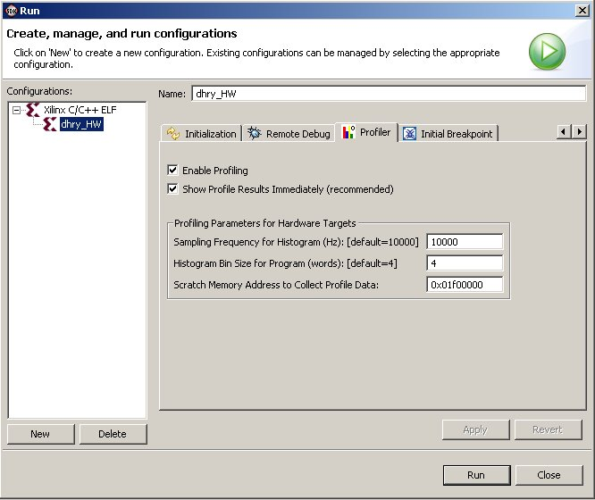

Specifying Profiler configuration
To configure options for the Profiler, do the following:
- In the C/C++ Projects view, select a project.
- Select Run > Run.
- In the Configurations box, expand Xilinx C/C++
ELF.
- Select a run configuration.
- Click the Profiler tab.

- Do the following:
- Click to select the Enable Profiling check box.
- Click to select the Show Profile Results Immediately check box.
- In the Profiling Parameters for Hardware Targets
area, specify the histogram sampling frequency and bin size, and the scratch memory to use for profiling.
- Click Run to profile the application

Profile
overview

Creating or editing a Run/Debug/Profile configuration
Profiling
Copyright © 1995-2009 Xilinx, Inc. All rights reserved.